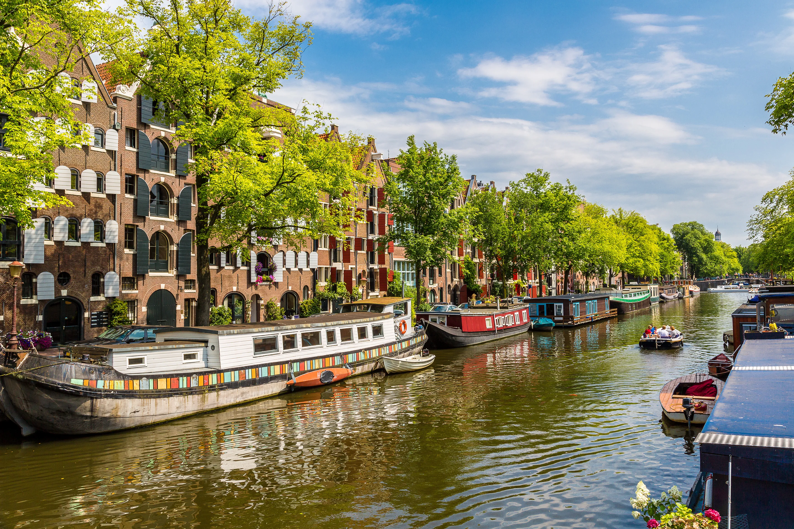
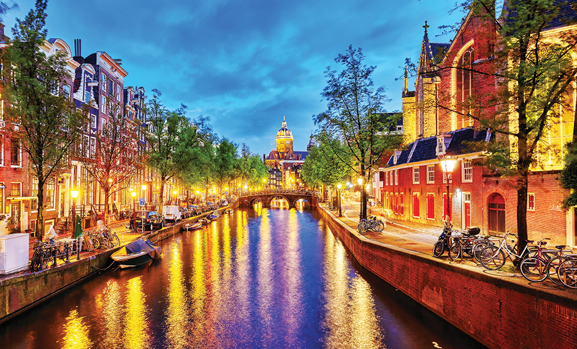
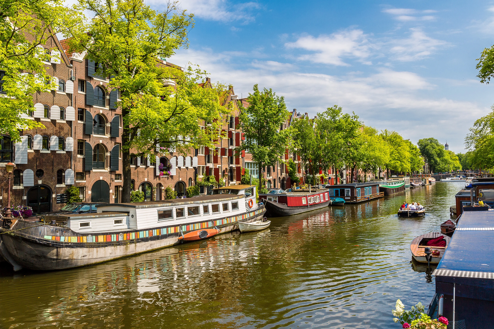
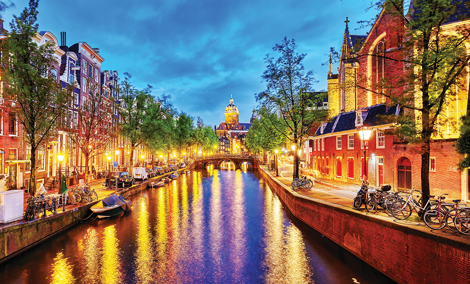

Why Amsterdam?
Places to go to and things to do...
Amsterdam is a beautiful place best known for its art and culture, canals
and stunning buildings! Depending on your interests there is plenty to do
from relaxing in cafés to exploring museums.
The desserts in Amsterdam are delicious, and there are various coffeeshops to visit
when you want to kick back and relax. There are many ways to get
to your destination; trams, buses or metro.
Click on Map of Amsterdam
to find out more.
Coffeeshops
Coffeeshops in Amsterdam
Easy Times Coffeeshop
Easy Times has been one of the leading coffeeshops in Amsterdam since its opening in 1985. Striving to provide their clients with the most premium quality products. The coffeeshop is modern in its appearance whilst having a laid back and relaxing atmosphere where anyone is welcome. Easy Times’ interior is best described as a mix between an upscale cafe and an urban nightclub.
Address:
Prinsengracht 476, Amsterdam 1017 KG
Learn more

Coffeeshop Bluebird
This cosy coffeeshop features two floors with delicious food to enjoy while you watch the football game or even listen to music (depending on what floor you are on). It is well presentabled with lovely feature walls! Menus are available for people who enjoy both hot and cold beverages, as well as those who want to relax and enjoy the atmosphere. In addition to the coffeeshop, there is also desserts available.
Address:
Sint Antoniesbreestraat 71, 1011 HB Amsterdam
Learn more
Smokey Coffeeshop
Smokey coffeeshop has a cosy atmosphere with nice seating area and friendly staff; playing different types of music from oldskool to newskool, from house to rap. They have the best milkshakes and if you ask for extra cream it's free of charge! Smokey coffeeshop also feature various screens that display strains & effects - high quality cannabis flowers, edibles, vape cartridges, concentrates & pre rolls.
Address:
Rembrandtplein 24, 1017 CV Amsterdam
Learn more
Gallery
Exquisite sceneries in Amsterdam
 


